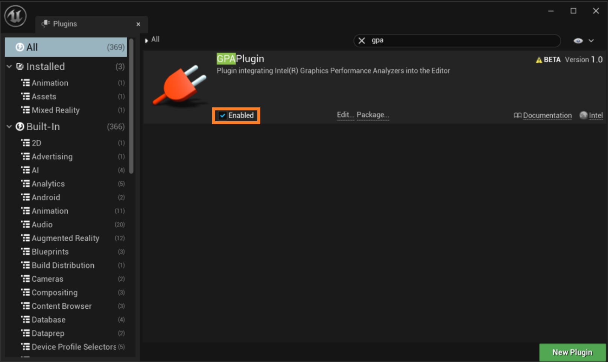
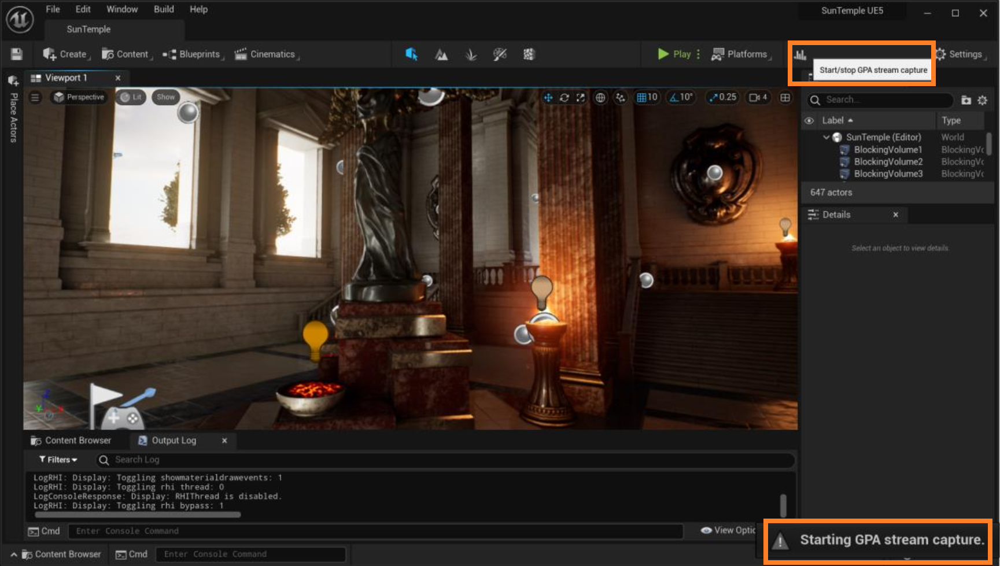
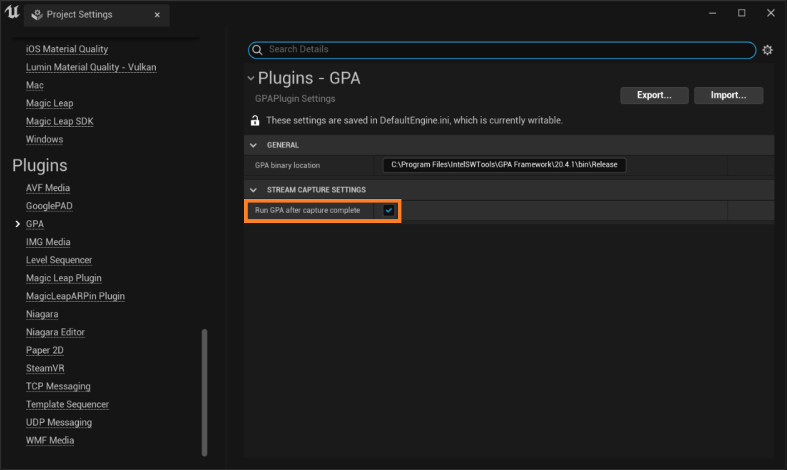

Intel® Graphics Performance Analyzers
User Guide
Quick Start with Profiling Unreal Engine* Games
Intel® GPA allows you to see FPS, shader, texture, and draw call details of the application. With the Graphics Performance Analyzers Plugin (GPAPlugin) for Unreal Engine*, you can capture a multi-frame stream directly while you are in Unreal Editor, and later analyze it with Intel GPA Graphics Frame Analyzer.
Multi-frame stream capturing allows you to analyze problems that are virtually impossible to debug in single frame capture mode. Such problems as intermittent glitches, random hitches, and issues with multi-frame algorithms can be tracked down more easily in Stream (multi-frame) mode because you can toggle between frames in a single capture.
This topic shows you how to start analyzing Unreal Engine* games with Intel GPA tools and the Intel GPA plugin in Unreal Editor.
Understand the Workflow
The common use case is when you know that your application is GPU-bound and you need to look into the details of API calls, shader execution, resources, bottlenecks in the graphics pipeline, or understand how multi-frame algorithms are being executed. In this case, your workflow is the following, and the details for each of these steps are explained below:
-
Enable the Intel GPA plugin in Unreal Editor.
-
With the Intel GPA plugin, capture a multi-frame stream directly from Unreal Editor.
-
Open a stream and analyze it with Graphics Frame Analyzer. In this step, you can track such problems as random hitches and issues with multi-frame algorithms or identify frames that are taking more time than expected.
-
Select a frame, or a set of frames, of interest and continue in-depth analysis with Graphics Frame Analyzer. In this step, you can analyze API calls, graphics resources, and find bottlenecks in the graphics pipeline.
Prerequisites
To be able to capture and analyze multi-frame streams from Unreal Editor:
-
Install Intel GPA from the download page.
-
Download the GPAPlugin plugin from GitHub.
Enable the Intel GPA Plugin
-
Download the GPAPlugin from the GitHub page and copy the GPAPlugin directory to UnrealEngineEnginePluginsDeveloper in your Unreal Engine installation folder.
-
Run Unreal Editor and open the Plugins menu in Settings.

-
Look up GPAPlugin using the search bar. Enable the plugin using the check box.
 -
Follow the prompt and restart Unreal Editor.
Capture Streams with the Intel GPA Plugin
Choose one of the following ways to capture a multi-frame stream:
-
In the editor:
Once you enable the plugin and restart the editor, an additional Start/stop GPA stream capture button displays in the toolbar.
-
To start the capture of a sequence of frames, click the Start/stop GPA stream capture button.
A pop-up window in the lower right corner indicates that the capture has started.
-
To stop the capture, click the same button again.
A message shows that the capture is complete.
-
-
In the console:
You can also capture streams when running the game.
-
To start the capture of a sequence of frames, use the command:
gpa.StreamCapture start -
To stop the capture, use the command:
gpa.StreamCapture stop
-
You can create multiple captures, each is stored separately for later analysis.
Open Frame Streams in Graphics Frame Analyzer
If you want to start Intel GPA immediately after the capture completes, this can be configured in the plugin settings.
-
Go to Settings->Project Settings.
-
Scroll down to the Plugins and select GPA.
-
Enable the option to run Intel GPA after the capture completes.

In other cases, you can open multi-frame streams through Intel GPA Graphics Frame Analyzer. The picture below shows the case when only one stream has been captured during a session with Unreal Editor. If multiple captures have been completed, each capture is shown as a separate thumbnail. They all are ready for analysis.
Double-click the stream or choose the stream you want to analyze and click Open to open it in Graphics Frame Analyzer. There you will see a list of captured frames.
Analyze Frames in Graphics Frame Analyzer
To go one level deeper and analyze an individual frame, double-click a frame or choose the frame you want to analyze and click Open. This will open a new view that enables you to analyze each rendering command, along with the associated resources such as shaders, stage input and output textures, and buffers.
To learn more about stream analysis, frame analysis, potential insights, and next steps, refer to Analyze GPU-bound Applications with Graphics Frame Analyzer.